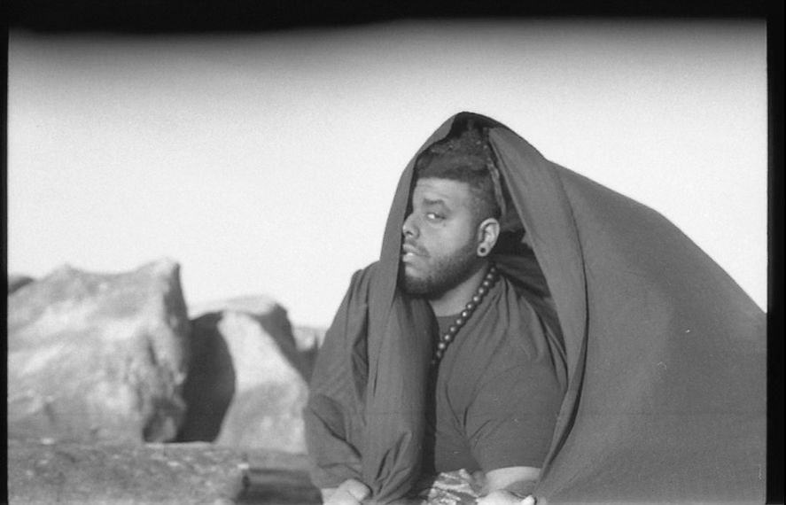

Regularly misunderstood, always gaining understanding.
Robin "Hyperius" Blake, a self-professed musical alchemist, captivates audiences with a blend of high artistry, "phat" grooves, and quality sound. Hailing from Cleveland, Ohio, this talented artist has been working on the local scene for a decade as an instrumentalist, vocalist, composer, and organizer.
Hyperius discovered his passion for music at the tender age of 8, when he was gifted an ancestral violin from his parents, paving the way for a distinctive musical journey that led to him obtaining a Bachelor's degree in Music, with a focus on the African diaspora.
Whether producing solo or working with his music collective, the Sound Experiment, he strives to move audiences through compelling storytelling and beautiful composition.
